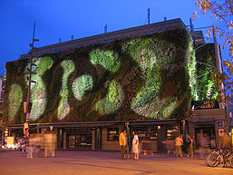

Connue pour la fameuse chanson « Sur le Pont d’Avignon », Avignon, surnommée la « Cité des Papes », est la plus grande ville du Vaucluse. C’est une ville ayant conservée beaucoup de l’architecture ayant fait son histoire, si bien qu’elle est classée au patrimoine mondial de l’UNESCO. Idéale pour un voyage sous le signe de la culture.

LOISIRS
Festival d'Avignon
Prenant place durant le mois de Juillet, le Festival d’Avignon est une manifestation majeure de théâtre (et de tout type d’art vivant) dans le monde (c’est la plus importante de France). Fondé en 1947, ils s’y jouent des classiques du théâtre Français tous les ans. La localisation principale du festival est la cours d’honneur du Palais des Papes. Durant le festival, l’on peut notamment montée dans la Grande Roue d’Avignon.
Collection Lambert
La Collection Lambert est un musée ouvert depuis 2000 par Yvon Lambert (d’où le nom). C’est un musé exposant divers œuvres d’art contemporain. Il s’y déroule parfois des performances (danse, lecture, démonstrations d’application, etc.) et des expositions temporaires.
Festival d'Avignon
Les Halles d’Avignon sont un marché provençal se trouvant dans le centre-ville d’Avignon. On y trouve une quarantaine de commerçants, boulangers, traiteurs, vendeurs de légumes, fromages, etc… Les Samedis à 11h se déroule « la petite cuisine », où des cuisiniers cuisinent avec des produits acheté dans le marché. Dehors, à l’entrée, se dresse un mur végétal de 30 mètres, conçu par Patrick Blanc, un botaniste.

MONUMENTS
Pont Saint-Bénézet (Pont d'Avignon)
On le nomme couramment « Le Pont d’Avignon », ce monument est l’un des plus connus de France grâce à la comptine « Sur le Pont d’Avignon ». Sa construction a démarré en 1177, soit il y a 840 ans (il a été terminé 8 ans plus tard). Il est constitué de 4 arches, cependant, durant le XVe siècle, le pont en disposait de 22 ! Ce pont permettait à l’époque de traverser le Rhône. Sur son troisième pilier, on y trouve la Chapelle Saint-Nicolas.

Palais des Papes

Cette construction de style gothique international date du Moyen-Âge, ce monument fut, durant le XIVe siècle le siège de la religion chrétienne. Six papes furent élus en ces murs. Ce monument est une partie importante de l’histoire de la chrétienté. Le Palais des Papes est aussi un monument majeur dans l’histoire du mouvement artistique gothique.